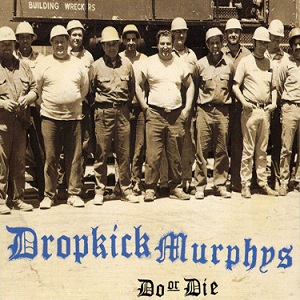
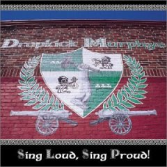
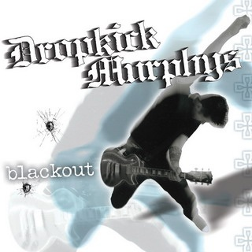

Deciding on favorite artist/band, is challenging for me, since there are so many very talented artists/bands out there. To narrow down my choices, I thought of which artists or bands I listen to, and their albums. I tapped into my early childhood of 80s pop, early 90s grunge, to the late 90s early 2000s Drum & Bass. There is the hard, industrial sounds of Nine Inch Nails, that blared through my stereo and got me through Middle School. The energy packed skate punk, from Pennywise and NOFX, that left me rebellious through High School. I thought of all these artists, and more. The albums they've released over the years, and the constant enjoyment I get when listening to them. Out of all the artists, that I've listened to, Dropkick Murphys has to be my favorite. Their celtic punk sounds, blends both an energy packed attutide of punk rock, with tones of traditional Irish folk.
Favorite Albums
Do or Die
Do or Die is the first release, from Dropkick Murphys. I rank this album in my top 3. It mixes hard street punk, with bagpipes. Yes, bagpipes. The first song on this album, Cadence To Arms, begins with bagpipes, then progresses into the street punk. This song, for the most part an instrumental, leads right into an album full of energy. Every time I hear this album, I just feel pumped and want to thrust my fist in the air and yell Oi!Oi!Oi!
Sing Loud, Sing Proud!
The junior album, covers a lot of pub songs, and folk. Dropkick's original songs as well as the cover songs, fit together, like they were written to work together. In this album, they blend their street punk sound, with a bit of folk, making a pretty fun album.
Blackout
Dropkick's fourth album, Blackout, shows the band had found the strong sounds in their previous three albums. The album shows how they have matured and their sound has never been stronger.
The following are a list of musical bands/artists, that I enjoy, in order of most to least.
- Dropkick Murphys
- Nine Inch Nails
- Sublime
- Tool
- Guttermouth